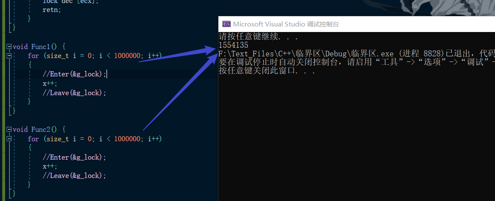
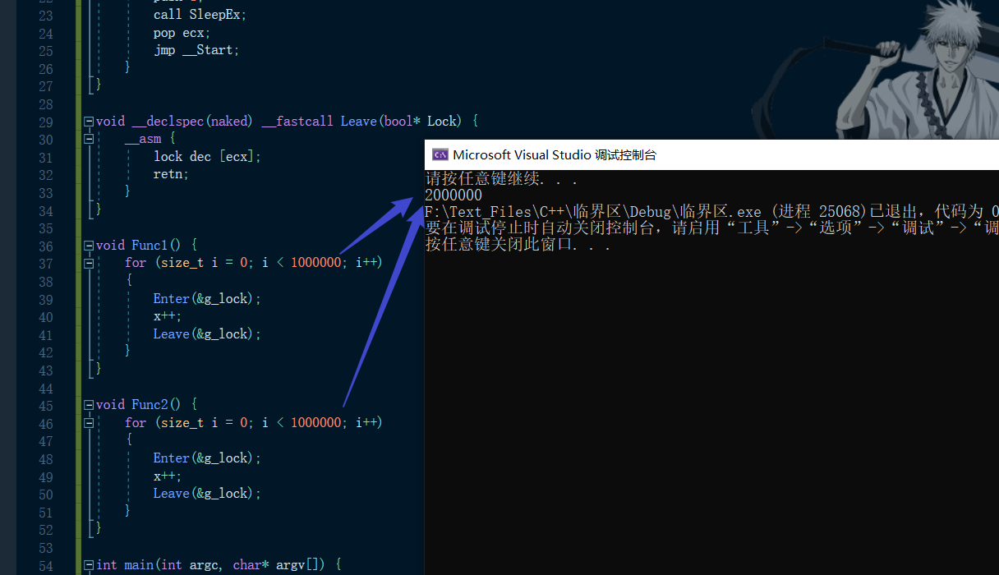
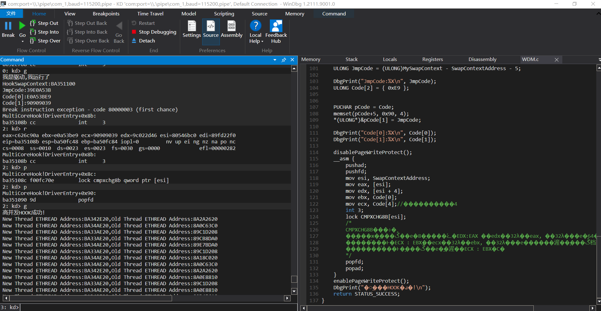
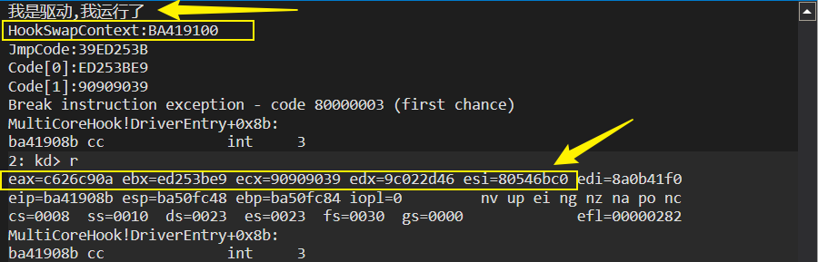
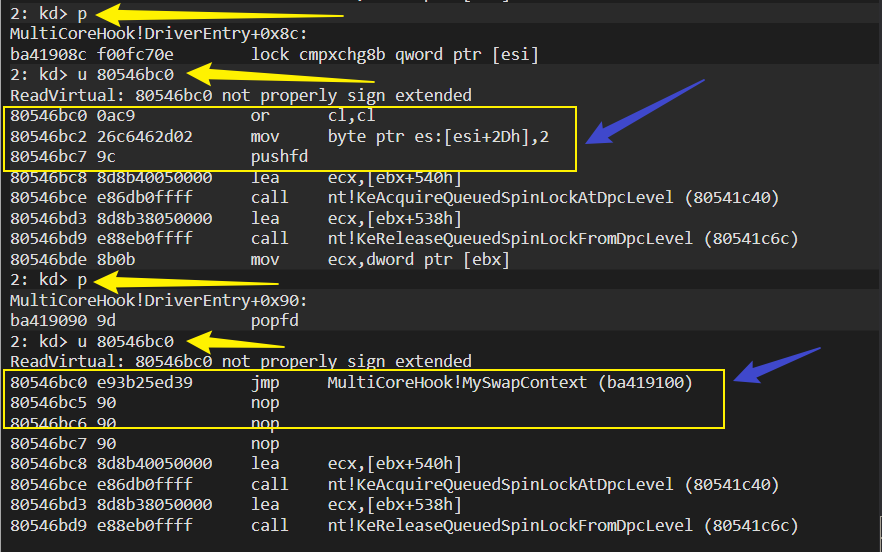

# 楔子
并发执行的定义是，多个程序在一段重叠的时间段中开始、运行与结束，但这些程序并没有在任何一个时刻同时在执行。
并行执行，则意味着在同一个时刻，存在两个以上任务在同时运行。
单核（是分时执行，不是真正的同时）
多核（在某一个时刻，会同时有多个线程再执行）
同步则是保证在并发执行的环境中各个线程可以有序的执行为了实现
只要提到并发就是多个线程操纵同一个资源的问题。
有些指令是可以在多核下执行的，并不会影响什么，如读的操作，但是写就不行了，必须得保证有序。
疑问：单核同步与多核同步一样吗？
# 临界区
为什么要引入临界区呢？看一下以下代码
# 演示代码
DWORD dwVal = 0; // 全局变量
线程中的代码：
dwVal ++; // 只有一行 安全吗？
对应的汇编代码：
mov eax,[0x12345678]
add eax,1
mov [0x12345678],eax
上面的汇编代码是不安全的，不论是单核还是多核，在多线程下，不同的线程抢占时间片，以上代码就会出现执行顺序的错乱。
# 原子操作
所谓原子操作是指不会被线程调度机制打断的操作；
这种操作一旦开始，就一直运行到结束，中间不会有任何 context switch （切换到另一个线程）。
LOCK 指令可以将将指令转换为原子指令。
INC DWORD PTR DS:[0x12345678] 一行汇编代码，安全吗？
这样一行指令在单核下是安全的，在多核下并不安全。
改成
LOCK INC DWORD PTR DS:[0x12345678]
这样，这行指令就变成的原子指令，当一个核正在读取这个指令时其他核就不能读取这条指令了。
查看 kernel32 中的 InterlockedIncrement
LONG __stdcall InterlockedIncrement (volatile LONG *lpAddend) | |
public _InterlockedIncrement@4 | |
_InterlockedIncrement@4 proc near ; | |
lpAddend = dword ptr 4 | |
mov ecx, [esp+lpAddend] ; 获取加数变量的指针 | |
mov eax, 1 ; 设置增量值 | |
lock xadd [ecx], eax ; interlocked increment 联锁增量 | |
inc eax ; 调整返回值 | |
retn 4 | |
_InterlockedIncrement@4 endp |
xadd 指令将第一个操作数 (目标操作数) 与第二个操作数 (源操作数) 交换，然后将两个值的和加载到目标操作数中，该指令可以与 LOCK 前缀一起使用，允许该指令以原子方式执行。
原子操作相关的 API：
InterlockedIncrement | |
InterlockedExchangeAdd | |
InterlockedDecrement | |
InterlockedFlushSList | |
InterlockedExchange | |
InterlockedPopEntrySList | |
InterlockedCompareExchange | |
InterlockedPushEntrySList | |
..... |
什么时候加锁：我们只有一行代码是担心多核同时访问的，其他的代码多核访问并不影响！
# 自己实现临界区
如果执行多行原子指令安全吗？如下的场景：
关键代码A //N 行代码要求原子操作 | |
关键代码B // 单独加 LOCK 可以吗？ | |
关键代码C | |
....... |
其实也不安全，当执行完第一行指令后，线程是可以被切换的，还是无法保证其执行的顺序。
如何保证执行完这些代码后才让其他核继续执行呢？
这就要设计一个临界区了。
临界区：一次只允许一个线程进入直到离开。
DWORD dwFlag = 0; // 实现临界区的方式就是加锁 | |
// 锁：全局变量 进去加一 出去减一 | |
if(dwFlag == 0) // 进入临界区 | |
{ | |
dwFlag = 1 | |
....... | |
....... | |
....... | |
dwFlag = 0 // 离开临界区 | |
} |
这样设计也不是安全的，因为是先判断再修改的 dwFlag ，进入临界区后在还没有修改 dwflag 为 1 时线程被切走了，就不行了，另一个线程也可以进入临界区了等等，会造成一些列问题。
之前利用互斥体、事件、信号量等等在多核的情况下也是安全的因为把线程都挂起了，只是效率不高罢了。
临界区是只要保证一次就只有一个线程进入就行，怎么实现的都行！
在单核的情况下实现临界区：
全局变量：Flag = 0 | |
进入临界区： | |
Lab： | |
mov eax,1 | |
xadd [Flag],eax | |
cmp eax,0 | |
jz endLab | |
dec [Flag] | |
// 线程等待 Sleep.. | |
endLab: | |
ret | |
离开临界区： | |
dec [Flag] |
以上代码在单核下是安全的，想要在多核下也是安全的，就要加 lock 指令了：
全局变量：Flag = 0 | |
进入临界区： | |
Lab： | |
mov eax,1 | |
lock xadd [Flag],eax | |
cmp eax,0 | |
jz endLab | |
dec [Flag] | |
// 线程等待 Sleep.. | |
endLab: | |
ret | |
离开临界区： | |
lock dec [Flag] |
# 代码实现临界区
#include<stdio.h> | |
#include<Windows.h> | |
int x = 0; | |
// 实现临界区 | |
bool g_lock = false; | |
void __declspec(naked) __fastcall Enter(bool* Lock) { | |
__asm { | |
__Start: | |
mov eax, 1; | |
lock xadd dword ptr [ecx], eax; | |
cmp eax, 0; | |
jnz __Waiting; | |
retn; | |
__Waiting: | |
lock dec [ecx]; | |
push ecx; | |
push 1; | |
push 1; | |
call SleepEx; | |
pop ecx; | |
jmp __Start; | |
} | |
} | |
void __declspec(naked) __fastcall Leave(bool* Lock) { | |
__asm { | |
lock dec [ecx]; | |
retn; | |
} | |
} | |
void Func1() { | |
for (size_t i = 0; i < 1000000; i++) | |
{ | |
Enter(&g_lock); | |
x++; | |
Leave(&g_lock); | |
} | |
} | |
void Func2() { | |
for (size_t i = 0; i < 1000000; i++) | |
{ | |
Enter(&g_lock); | |
x++; | |
Leave(&g_lock); | |
} | |
} | |
int main(int argc, char* argv[]) { | |
CreateThread(NULL, NULL, (LPTHREAD_START_ROUTINE)Func1, NULL, NULL, NULL); | |
CreateThread(NULL, NULL, (LPTHREAD_START_ROUTINE)Func2, NULL, NULL, NULL); | |
system("pause"); | |
printf("%d", x); | |
return 0; | |
} |
不加临界区：

加临界区：

这个临界区的设计还是有问题的，就是如果我们执行完 SleepEx 后，进入临界区的线程还没有出来就有问题了。
# 总结
xadd 这种指令解决了我们哪些问题？
为什么要这样设计？
如果我们用
LOCK INC DWORD PTR DS:[Flag]
cmp [Flag],0
这样是不行了，如果在执行完 inc 后被线程被切换，另一个线程又执行了一遍，，我们是无法保证只有一个线程访问临界区的。
但如果我们用上面的代码：
一个线程进来了执行了 xadd 后 eax=0 flag=1 ，假设这个时候被切走了，又一个线程执行这段代码，再次执行 xadd 这时 eax=1 ，也就无法执行后面的代码了，只能在临界区中等待，保证了只有一个线程进入临界区。
这个等待时间我们自己设置，那么等待多久好呢？等待结束后，还是进不去临界区怎么办呢？或者在等待期间，临界区已经可以进入了，但我们仍处于等待阶段怎么办呢？
这些问题学完后面的知识就可以解决了。
# 自旋锁
上面我们确保临界区的方法是把其他的线程休眠，也就是线程切换，我们了解过线程切换的本质，线程切换是不是太浪费效率了呢？有没有一种轻量级的实现方法呢？
Windows 设计了自旋锁，查看其 API：
__fastcall KiAcquireSpinLock (x) | |
public @KiAcquireSpinLock@4 | |
lock bts dword ptr [ecx], 0 ; ecx = 参数 | |
; bts 指令： | |
; 取 [ecx] 二进制比特位的第 0 位，存在 cf 标志位中 | |
; 将 [ecx] 二进制比特位的第 0 位设置为 1 | |
jb short loc_469B98 ; cf=1 时跳转 | |
retn | |
loc_469B98: | |
test dword ptr [ecx], 1 ; 判断参数是否又为 0 了，既判断进入了临界区的线程是否离开了临界区。 | |
jz short @KiAcquireSpinLock@4 | |
pause | |
jmp short loc_469B98 |
模拟一下其流程：
注意是 fastcall 传参。
线程第一次执行这个函数时，假设参数是 0，那么执行完 bts 指令后， CF = 0 参数 x=1 不会跳转，然后线程进入临界。
如果在这个线程进入临界区后，其他核的线程又开始执行这个函数，那么此时这个参数就是 1（因为是全局变量），这个时候再执行 bts 指令后 CF=1 x=1 这时会跳转，然后判断参数是否又为 0 了，既判断进入了临界区的线程是否离开了临界区，如果离开了临界区则重新调用该函数，如果没有则执行 pause 指令，该指令会让 cpu 空转一会儿，具体是多少我没找到相关资料，在滴水的视频中，有人说是 20 纳秒，然后就循环判断了，直到可以进入临界区。
# 自旋锁的优点和缺点
在多核的环境中效率很高，但在单核的环境中不行。
# 作业
在内核环境下如何对一个高并发的函数进行 HOOK 而不会出错？
这个问题的关键是，hook 后一般是 e8 /e9 后跟 4 字节，总共 5 字节，但没办法一次性改 5 个字节，可能改了第一个字节，正要改后 4 个字节时，别的线程进来了，就会出错。
之前学习的 INLINE HOOK 修改字节的方法是使用 memcpy 这样在内核中 HOOK 一个高并发的函数有很大的几率出错，可能会直接蓝屏。
在网上看到三种办法：
短跳中转 利用 EB 指令修改前 2 字节跳到某个长跳的方式。
中断门 中断门也是只用改两个字节，需要先构造中断门。
找一条一次性修改 8 字节的指令，这个指令就是 cmpxchg8b .
代码实现 INLINE Hook 线程交换的函数 SwapContext ：
在 Windbg 中 u SwapContext 得到 SwapContext 函数的地址是 80546bc0
本次 Hook 要用 cmpxchg8b 指令一次性修改 8 个字节，而 SwapContext 函数的前 8 个字节为：
0: kd> u SwapContext | |
nt!SwapContext: | |
80546bc0 0ac9 or cl,cl | |
80546bc2 26c6462d02 mov byte ptr es:[esi+2Dh],2 | |
80546bc7 9c pushfd |
既： 0a c9 26 c6 46 2d 02 9c
而我们要使其改为 jmp xxxxxxxx --> E9 xxxxxxxx
/** | |
* 在多核的环境下 Hook xp sp3 的 SwapContext 函数 | |
**/ | |
#include<ntddk.h> | |
ULONG SwapContextAddress = 0x80546bc0; | |
ULONG NextAddress = 0x80546bc8; | |
ULONG OldCode[2] = { 0 }; | |
// 关闭内存页写入保护 | |
void _declspec(naked) disablePageWriteProtect() | |
{ | |
_asm | |
{ | |
push eax; | |
mov eax, cr0; | |
and eax, ~0x10000; | |
mov cr0, eax; | |
pop eax; | |
ret; | |
} | |
} | |
// 开启内存页写入保护 | |
void _declspec(naked) enablePageWriteProtect() | |
{ | |
_asm | |
{ | |
push eax; | |
mov eax, cr0; | |
or eax, 0x10000; | |
mov cr0, eax; | |
pop eax; | |
ret; | |
} | |
} | |
// 打印新线程和老线程的 ETHREAD | |
// | |
VOID __declspec(naked) MySwapContext() { | |
__asm sub esp, 0x50; // 提升堆栈，提高容错性。 | |
ULONG NewThread, OldThread; | |
__asm { | |
mov NewThread, esi; | |
mov OldThread, edi; | |
} | |
if (NewThread != NULL || OldThread != NULL) | |
{ | |
DbgPrint("New Thread ETHREAD Address:%X,Old Thread ETHREAD Address:%X\t\n", NewThread, OldThread); | |
} | |
__asm add esp, 0x50; | |
// 执行被覆盖的 SwapContext 的代码 | |
__asm { | |
or cl, cl; | |
mov byte ptr es : [esi + 0x2D] , 2; | |
pushfd; | |
jmp NextAddress; | |
} | |
} | |
VOID DriverUnload(PDRIVER_OBJECT pDriver) { | |
// 0a c9 26 c6 46 2d 02 9c | |
OldCode[0] = 0xC626C90A; | |
OldCode[1] = 0x9C022D46; | |
disablePageWriteProtect(); | |
_asm { | |
pushad; | |
pushfd; | |
mov esi, 0x805428E0; | |
mov edx, [esi]; | |
mov eax, [esi + 4]; | |
mov ebx, OldCode[0]; | |
mov ecx, OldCode[4];// 这个必须得填 4 | |
lock CMPXCHG8B[esi]; | |
popfd; | |
popad; | |
} | |
enablePageWriteProtect(); | |
DbgPrint("我是驱动，我卸载了\t\n"); | |
} | |
NTSTATUS DriverEntry(PDRIVER_OBJECT pDriver, PUNICODE_STRING pRegPath) { | |
pDriver->DriverUnload = DriverUnload; | |
DbgPrint("我是驱动,我运行了\t\n"); | |
// 在 Windbg 中 u SwapContext 得到 SwapContext 函数的地址是 80546bc0 | |
//jmpCode = 目标地址 - 当前地址 - 当前指令长度 | |
DbgPrint("HookSwapContext:%p\n", MySwapContext); | |
ULONG JmpCode = (ULONG)MySwapContext - SwapContextAddress - 5; | |
DbgPrint("JmpCode:%X\n", JmpCode); | |
ULONG Code[2] = { 0xE9 }; | |
PUCHAR pCode = Code; | |
memset(pCode+5, 0x90, 4); | |
*(ULONG*)&pCode[1] = JmpCode; | |
DbgPrint("Code[0]:%X\n", Code[0]); | |
DbgPrint("Code[1]:%X\n", Code[1]); | |
disablePageWriteProtect(); | |
__asm { | |
pushad; | |
pushfd; | |
mov esi, SwapContextAddress; | |
mov eax, [esi]; | |
mov edx, [esi + 4]; | |
mov ebx, Code[0]; | |
mov ecx, Code[4];// 这个必须得填 4 | |
int 3; | |
lock CMPXCHG8B[esi]; | |
/* | |
CMPXCHG8B 的用法 | |
该指令判断指定内存中的 8 字节内容和 EDX:EAX （edx 高 32 位，eax, 低 32 位）中的 64 字节内容是否相同， | |
如果相同，就把 ECX : EBX（ecx 高 32 位，ebx, 低 32 位）中的内容替换到指定内存。 | |
如果不相同，就把指定内存中的值替换到 ECX : EBX 中。 | |
*/ | |
popfd; | |
popad; | |
} | |
enablePageWriteProtect(); | |
DbgPrint("高并发HOOK成功!\n"); | |
return STATUS_SUCCESS; | |
} |
在 Windbg 中查看：

如果打印的话虚拟机就会卡住，winbdg 中会一直显示打印系信息。
一步步调试查看是否修改成功。


没问题！
# Reference
https://blog.csdn.net/qq_41490873/article/details/105882268
https://blog.csdn.net/sharenfish/article/details/121625106
https://blog.csdn.net/Kwansy/article/details/109995196